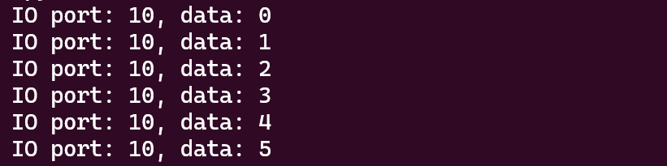

使用QEMU TCG模拟一个硬件虚拟化环境
本文将介绍如何使用 QEMU TCG 模拟的方式，构建一个支持硬件虚拟化的环境，使得能够在该模拟器环境下启动一个 KVM 虚拟机。
编译最新 QEMU
首先需要下载并编译 QEMU，我们以 x86_64 架构为例，QEMU 选择使用最新版本。
1 | # 下载最新仓库 |
准备 Linux 内核（选用 6.12.0）
接下来，需要准备 Linux 内核，我这里选用的是 6.12.0 版本。硬件虚拟化技术使用 AMD-V，需要在 menuconfig 中启用 KVM for AMD processor support。
1 | # 下载 6.12 版本内核 |
注意，在启用指定的 menuconfig 选项时，建议标记为
Y直接包含进内核中，而非标记为M以模块形式动态加载。
准备根文件系统（基于 Buildroot）
有了 QEMU 和 Linux 内核，还需要有根文件系统，才能够正常工作。这里我使用的是 Buildroot，只需要简单的配置，它就能够自动化构建一个根文件系统。
1 | # 下载 buildroot |
Buildroot 构建过程涉及联网下载对应的软件包，如果网络超时的情况，可以 ^c 中断，make clean 后再重新编译。
在 WSL2 环境下构建时，由于 PATH 环境变量包含了 Windows 下的某些软件，因此可能导致无法编译：
此时可以使用命令
export PATH=$(echo "$PATH" | tr -d ' \t\n')暂时将 PATH 路径的空格去除，再重新编译。
模拟器启动参数
上述编译都完成后，将得到的内核 bzImage （位于 arch/x86/boot/bzImage）和根文件系统 rootfs.ext2 （位于 output/images/rootfs.ext2）拷贝到同一目录下。
QEMU 启动脚本示例如下所示：
1 | /your_path_of_qemu/build/qemu-system-x86_64 \ |
KVM 虚拟机测试
在完成了虚拟化环境的构建后，便可以开始测试了。这里参考 100 行 C 代码创建一个 KVM 虚拟机，以很少的代码量构建一个最小的 hypervisor。
将 kvm-vmm 和 guest 在本地编译好后放入 rootfs.ext2 中，启动模拟器运行，结果如下图所示：

在该模拟器中运行一个完整的 QEMU/KVM 虚拟机理论也是可行的，但是我使用的 buildroot 生成的根文件系统缺乏 QEMU 运行所需的完整的动态链接库。
静态编译 QEMU 是一种选择，但是也比较繁琐，需要为本机准备大量的静态库，在此没有进行测试。
 微信
微信 支付宝
支付宝